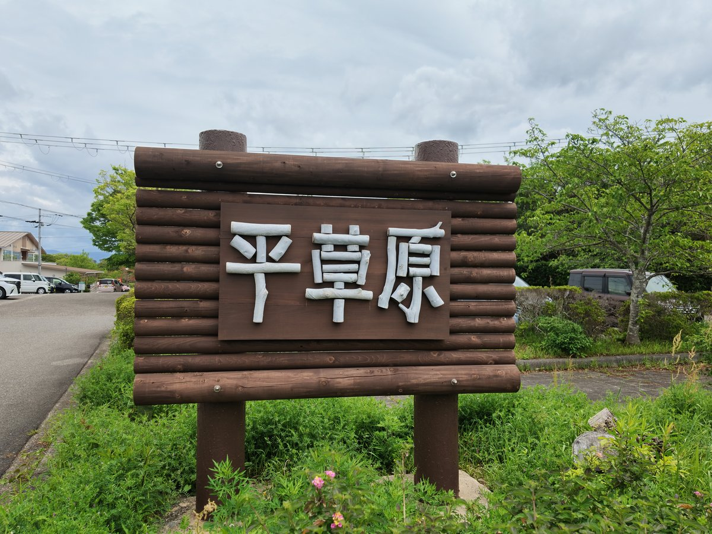

平草原公園
和歌山県西牟婁郡白浜町2054-1
駐車場
あり（無料）
トイレ
あり（洋式）
ドッグラン
あり（無料） / 2025年6月23日オープンの無料ドッグラン。約800平米・外周180mの天然芝を小型犬用（10kg未満）と中・大型犬用（10kg以上）に分離。入口の共有スペースに足洗い場・汚物入れあり。現地の利用規約により狂犬病予防注射とワクチン未接種の犬・発情中のメス犬は入場不可。利用時間8:30〜16:30、年中無休、登録不要。スタッフ常駐なし。利用時間は媒体により17:00までとする案内もあり事前確認推奨。
入場料
無料
備考・犬連れでのポイント
白浜町を一望する標高の高い公園。約2,000本の桜（ソメイヨシノ中心）の名所で、3月下旬〜4月上旬に桜まつり・ライトアップ開催。
2025年6月に無料ドッグラン新設（エリア分離あり）。現地の掲示（白浜町観光課・平草原公園管理事務所）では園路でのペットの散歩が認められており、リード着用とフンの持ち帰りまたは出入口付近のウンチポストへの投入が条件。
舗装された園路でのマーキングは遠慮するよう求められ、した場合は水で洗い流すこと。
園路以外（芝生・休憩所・トイレ・遊具周辺）への立入りと園内でのブラッシングは遠慮するよう掲示。
2kmのトリムコースはペットを連れての利用不可と別途掲示あり。
ドッグランは狂犬病予防注射とワクチン未接種の犬、発情中のメス犬、皮膚病や伝染性疾患のある犬は入場不可。
中学生以下だけでの利用と、飼い主が場外にいる状態での利用も不可。
広場内は水分補給以外の飲食とエサやりが禁止。梅園、白浜温泉民俗資料館併設。
敷地面積約140,000平米、8:30〜17:00年中無休、入場無料、駐車場60台無料。
スズメバチ・マムシ出没の注意喚起あり。【ドッグラン内の梅の実落下注意】2026年4月運営者訪問時、ドッグラン敷地内の梅の木から青い実が大量に落下しているのを確認。
梅の青い実は青酸配糖体を含み犬にとって有毒のため、拾い食い癖のあるワンちゃんは要注意。
5〜6月の青梅期は特に注意し、リードを短く保ち、地面の落下物を確認してから遊ばせること。
万が一誤食した場合は速やかに動物病院へ。